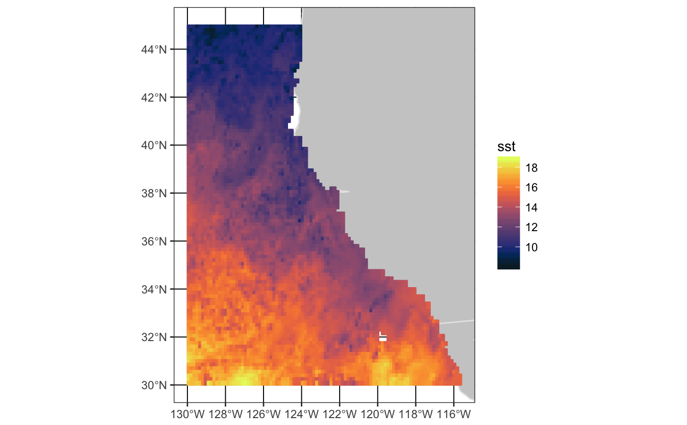

plotBox is a function to plot the results from
rxtracto() and xtracto()
plotBBox(resp, plotColor = "viridis", time = NA, animate = FALSE, name = NA, myFunc = NA, maxpixels = 10000)
| resp | data frame returned from rxtracto() or xtracto() |
|---|---|
| plotColor | the color to use in plot from rerddap |
| time | a function to map multi-time to one, or else identity for animation |
| animate | if multiple times, if TRUE will animate the maps |
| name | name for colorbar label |
| myFunc | function of one argument to transform the data |
| maxpixels | maximum numbe rof pixels to use in making the map - controls resolution |
a plotdap plot
require("ggplot2")#>#> #>urlbase <- 'https://upwell.pfeg.noaa.gov/erddap' dataInfo <- rerddap::info('erdMBsstd1day') parameter <- 'sst' xcoord <- c(230, 245) ycoord <- c(30, 45) tcoord <- c('2006-01-15', '2006-01-18') zcoord <- c(0., 0.) extract <- rxtracto_3D(dataInfo, parameter, xcoord = xcoord, ycoord = ycoord, tcoord = tcoord, zcoord = zcoord) plotBBox(extract, plotColor = 'temperature')#> Warning: the condition has length > 1 and only the first element will be used#>#>#>